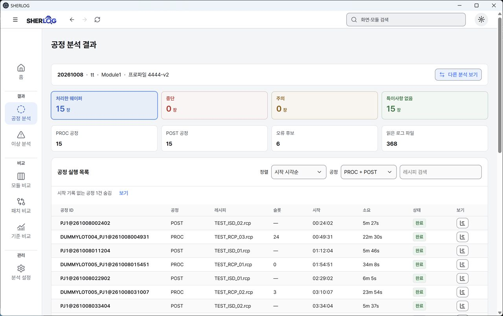

Java · Spring Boot
트랜잭션 경계, 커밋 뒤 이벤트 처리, 통화방 상태 전이 설계
콜미베이비 · 무쉼사 · 선물하기 · SSACTHREE · 책추책책추
Backend Developer Portfolio
백엔드 개발자 이어진입니다.
좋은 서비스는 기능이 완성된 뒤에도 안정적으로 운영되는 서비스라고 생각합니다. 사용자가 실제로 겪을 상황에서 필요한 기능을 찾고, 장애가 나도 핵심 데이터가 남도록 설계하며, 문제가 생기면 계측으로 원인을 좁혀 해결합니다.
 운영 안정성
사용자 관점
운영 안정성
사용자 관점
Skills
트랜잭션 경계, 커밋 뒤 이벤트 처리, 통화방 상태 전이 설계
콜미베이비 · 무쉼사 · 선물하기 · SSACTHREE · 책추책책추
도메인·정책 테이블 모델링, 변경분만 저장하는 동기화
콜미베이비 · 무쉼사 · SSACTHREE · SQLD
분석 작업 실행·취소 API와 결과 저장 계층, 추천 파이프라인
SHERLOG · 책추책책추 · 수어프라이즈
삼성 SW역량테스트 B형(Professional), 매일 1문제
DevDay 코딩경진대회 수상 4회 · 정보처리기사
협업 도구 Git · GitHub · GitLab · Jira · Notion
How I work
기준 A가 드러난 작업
2024.07 — 2026.11
Project 1 2026.10 – 2026.11 · SSAFY 2학기 자율 프로젝트(기업연계) · 6명 · 팀장
흩어진 반도체 설비 로그를 하나의 실행 흐름으로 복원하고, 정상 패턴과 비교해 이상 시점과 근거 원문을 찾아 주는 Windows 사후 분석 프로그램입니다.
내 역할 · 팀장 / BE 1 (앱 실행 · API · 저장 · 조회)

SHERLOG 문제 해결 · Jira -473
하루치 결과의 공정 목록이 약 2초 뒤 503. 20건으로 줄여도, 레시피로 걸러도 똑같이 실패했습니다.
503 하나에 시간·응답 크기·스캔 한도 초과가 함께 묶여 있어 코드만 보고 단정하지 않았습니다. SQL별 구간을 재 보니 모든 하위 실행을 펼친 뒤 사건을 조인하는 후보 수 집계가 2초를 다 쓰고 있었습니다.
실행 약 56만 건에 사건은 155건뿐인 희소한 분포였습니다. 사건이 있는 실행에서 출발해 부모로 거슬러 올라가며 세도록 바꾸고, 기존 복합 PK와 인덱스를 그대로 썼습니다.
같은 합성 하루 결과 DB(이벤트 2,048,906 · 실행 558,752 · 사건 155) · 두 값은 측정 경계가 달라 배수로 비교하지 않음 · 구현 7c6e76aa · dev 병합 99326a57 (2026-11-09)
SHERLOG 저장 · 실행 계층
동시 분석 · Jira -529
1 → 3건
빈 실행 슬롯을 접수 순으로 채우고, 작업마다 취소 신호·작업자·결과를 따로 둡니다. SQLite 쓰기는 단일 writer에서 짧은 배치로 직렬화했습니다.
동시 실행 상한 기준이며 처리 속도 3배를 뜻하지 않습니다. 격리 Electron에서 합성 작업 4개로 확인.
재시작 준비 · Jira -485
7.97 → 4.20초
강제 종료 뒤 대용량 결과 DB를 다시 열 때 시작 제한을 넘겼습니다. SQL별로 재 보니 같은 소유 잠금 안에서 외래 키 전체 검사가 두 번 돌고 있었습니다. 읽기 전용 검증 한 번만 남기고, 손상 DB를 거부하는 검증은 유지했습니다.
같은 1.94GB 합성 DB의 저장 런타임 준비 구간. 전체 앱 시작 시간은 별도입니다. 강제 종료 후 재연결, 12개 테이블 행 수·대표 원문 위치를 전후 대조했습니다.
스키마 v2 → v3 이전
실패해도 원래대로
합성 DB 이전 전후 기존 11개 테이블 전체 행, 9개 API 응답, 설정 바이트 일치.
Project 2 2026.07 – 2026.08 · SSAFY · 6명 · 백엔드 테크 리더
부모와 아이의 영상통화에 STT, 대화 이어가기 질문 추천, 공동 그림판, AI 그림일기를 연결한 가족 소통 서비스입니다.
내 역할 · 백엔드 테크 리더
CallMeBaby 실시간 상태 · 장애 복구
같은 통화방으로 돌아옵니다
participant_left Webhook으로 Redis 참여자 집합을 보정합니다.근거 · Jira S15P11B101-384 · 385 · 388 · 389 · 395 · 407 · 415 · 417 · CallRoomRedisService · CallRoomReconnectionGraceScheduler · CallRoomOrphanReconciliationScheduler
CallMeBaby AI 파이프라인
로컬 RTX 4050 · 합성 데이터 15회 측정 · 운영 수치 아님 · Jira S15P11B101-200 · 204 · 205 · 277–280 · 342 · 348 · 363 · 377 · 426
Project 3 2026.08 – 2026.09 · SSAFY · 6명 · AI 담당, 백엔드 일부
도서관 대출 데이터와 내 서재를 바탕으로, 이유와 함께 책을 추천하는 서비스입니다. 추천 파이프라인과 백엔드 연동을 맡았습니다.
Data4Library 후보 약 45만 건 검증 · ISBN 기준 정리
1,536차원 임베딩을 오프라인 생성 → Qdrant 색인
태그 배치는 규칙 기반 결과와 confidence를 먼저 쓰고, 필요한 요청만 GMS로
하이브리드 랭킹
Spring Boot가 취향·서재로 요청을 만들고, 반환 ISBN을 canonical 도서 정보에 연결
막대 길이는 배치 크기 대비 비율입니다. 리포트 항목은 서로 겹칠 수 있어 합산하지 않습니다. 온라인 추천 요청은 GMS를 호출하지 않습니다.
책추책책추 익명 책 월드컵 · 배포 검증
GMS에는 제목·저자·ISBN 없이 소개문만 보내 오프라인으로 요약했습니다. 신원 노출·스포일러 검증, 캐시·재개·예산 상한을 걸었습니다 (최종 요청 504회).
배포 환경 검증 · 감사 CLI의 Qdrant alias 조회 경로를 /aliases로 수정 · 책·태그 alias 활성 버전과 태그 포인트 버전 대조 · current-release와 Docker 이미지 태그 비교 → 최종 인덱스 감사 status PASS · failureCount 0 · 실제 JWT로 세션 생성부터 15회 선택, COMPLETED까지 확인
Project 4 2025.08 – 2025.11 · 카카오테크 캠퍼스 · 5명 · 백엔드 테크 리더
전국 무더위쉼터를 찾고 리뷰를 남기는 서비스입니다. 매일 03:45 Spring Batch가 공공 API(page-size 1000)와 기존 DB를 chunk 100 단위로 비교합니다.
| 쉼터 (예시) | 외부 응답 | 처리 |
|---|
PR과 main·develop push마다 Java 21 Gradle build/test. main push 시 Docker 이미지 → ECR → EC2 컨테이너 교체.
35.0°C 이상일 때만 폭염 알림, 마지막 발송 후 50분 쿨다운. 쉼터 도착 10분 뒤 리뷰 리마인더.
Access 60분 · Refresh 7일, stateless 세션, OncePerRequestFilter로 SecurityContext 주입.
협업에서 정한 기준
파이프라인 오류가 반복될 때, 원인을 찾는 동안에는 PR마다 전원 리뷰를 잠시 보류하고 로그 기준으로 빠르게 고쳤습니다. 오류를 모두 해결한 뒤 변경분 전체를 모든 팀원이 리뷰하고 머지했습니다. 규칙을 보류할 때와 지킬 때를 나눈 경험입니다.
Project 5 2025.06 – 2025.08 · 카카오테크 캠퍼스 · 1인 풀스택
주문 생성, 위시리스트 삭제, 카카오 메시지 알림을 하나의 @Transactional로 묶었습니다. 기능 테스트는 통과했지만, 현업 멘토의 질문을 받고서야 알림 API 장애가 정상 주문까지 롤백시키는 구조라는 걸 알았습니다.
이 피드백 이후로 "평소에 도는가"보다 "장애가 났을 때 무엇이 남는가"를 먼저 묻게 됐습니다.
2024.10 – 2025.12
2025.03 – 2025.12 · 3명 · 팀장
Android · Kotlin · TFLite
드라이브 스루에서 청각장애인의 주문 소통을 돕는 온디바이스 AI 수어 통역 앱. 서버 없이 단말 안에서 수어 인식, 한국어 음성 인식, 한영 번역을 이었습니다.
2024.10 – 2024.12 · NHN Academy · 7명
Spring Cloud · MySQL
온라인 서점 플랫폼에서 정책·쿠폰 시스템을 맡았습니다. 이벤트가 생길 때마다 enum과 코드를 고치던 방식을, 규칙과 적용 대상을 데이터로 관리하는 구조로 바꿨습니다.
2025.01 – 2025.02 · UCSD Qualcomm Institute · 5명
데이터 수집 · 전처리
형식과 공간 기준이 다른 공공데이터를 ZIP Code로 통일해 분석 데이터셋을 만들었습니다. 결과는 KCC 2025 논문 공동 저술로 이어졌습니다.
Education & Activities
Awards · Certifications · Publication
Publication · KCC 2025 · pp.2,389–2,391
미국 LA 범죄 집중지역 분석: 사회경제적 지표를 활용한 데이터 기반 클러스터링 접근법
한국정보과학회 2025 한국컴퓨터종합학술대회 논문집 · 공동 저자 (데이터 수집·전처리 담당) · DBpia
Thank you
장애가 난 날에도
믿을 수 있는 백엔드를
만들고 싶습니다.